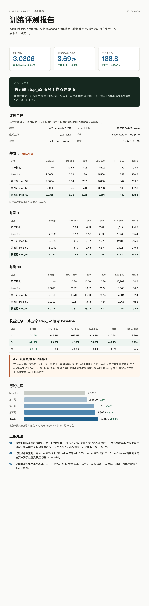

DeepSpec-v5 · 投机解码 / Speculative Decoding
DSpark Draft 训练评测报告
DSpark Draft Training Evaluation Report
第五轮训练后的 draft（step_52）相对线上 released draft，接受长度从 2.5075 提升到 3.0306（+20.9%），这是五轮里第一次越过 3.0。
推荐上线配置为第五轮 step_52、服务工作点并发 5：端到端时延中位数 −33.0%，单请求吞吐 +44.7%，投机解码总加速 1.41x → 1.99x。
